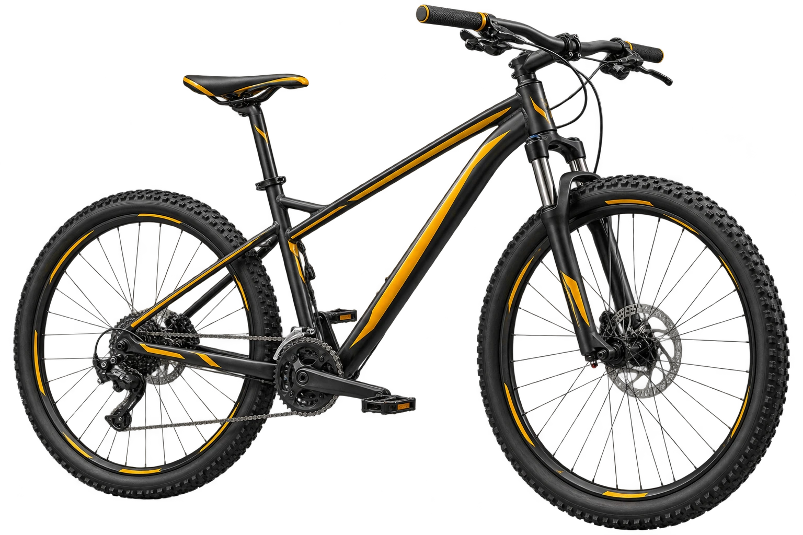

ПРОФИСПОРТ · ОРЕНБУРГВернём велосипед
Вернём велосипед
в движение
Диагностика, настройка и обслуживание.
Расскажите о проблеме — начнём с неё.
01—03
Как воспользоваться сервисом
- Ознакомьтесь с прайс-листом и выберите нужную услугу.
- Если остались вопросы, позвоните в магазин — подскажем по работам и стоимости.
- Привозите велосипед: дополнительные работы согласуем после осмотра.
Оренбург, проспект Победы, 79
Актуальный прайс-лист
Ориентируйтесь по направлениям работ. Точную стоимость мастер назовёт после осмотра велосипеда и согласования объёма ремонта.
ПРАЙС-ЛИСТ МАСТЕРСКОЙОсновные работы
Стоимость после осмотраКак устроен велосипед
Выберите деталь на велосипеде или её название. Подскажем, за что она отвечает и на что обратить внимание перед обращением в мастерскую.

Выберите отметку, чтобы узнать о детали. Конструкция вашей модели может отличаться.ПРОФИСПОРТ · ОРЕНБУРГ
Будем рады видеть вас
Проспект Победы, 79
Магазин спортивных товаров
Построить маршрутКарточка магазина в 2ГИС